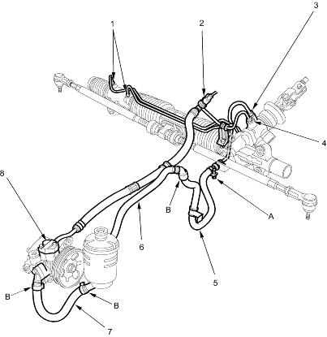

|
- CYLINDER LINE FLARE NUTS
17 Nm (1.7 kgf/m, 12 lbf/ft)
- POWER STEERING PRESSURE SWITCH
12 Nm (1.2 kgf/m, 8.7 lbf/ft)
- RETURN LINE FLARE NUTS
16 x 1.5 mm
28 Nm (2.9 kgf/m, 21 lbf/ft)
- FEED HOSE FLARE NUTS
14 x 1.5 mm
37 Nm (3.8 kgf/m, 27 lbf/ft)
- RETURN LINE
- RETURN HOSE
- PUMP INLET HOSE
- PUMP OUTLET HOSE
11 Nm (1.1 kgf/m, 8.0 lbf/ft)
|